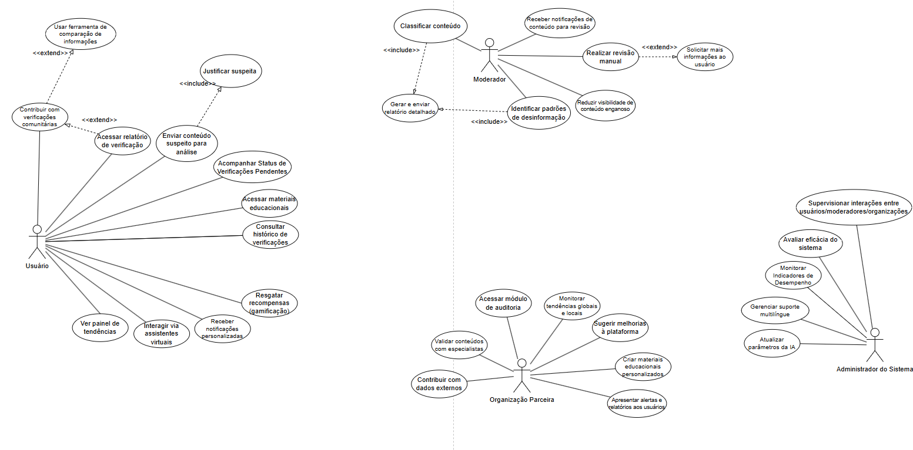

UML Verify¶
O Verify é uma plataforma digital desenvolvida para combater a crescente onda de desinformação na sociedade. Sua proposta é identificar, analisar e mitigar a propagação de notícias falsas por meio de inteligência artificial e da colaboração entre usuários e especialistas em checagem de fatos.
Link do UML: Estudos de caso Verify
Prints do UML

Especificação de Caso de Uso: Enviar Conteúdo Suspeito para Análise¶
1. Breve Descrição¶
Este caso de uso permite que o Usuário da plataforma "Verify" envie conteúdos que considera suspeitos (como textos, links, imagens ou vídeos) para que o sistema realize uma análise de veracidade. O objetivo é iniciar o processo de verificação, que pode envolver tanto a análise por inteligência artificial quanto a revisão manual por moderadores.
2. Pré-Condições¶
- PC-1: O Usuário deve ter acesso à plataforma "Verify", seja pelo aplicativo instalado, web, ou por meio de um dos canais integrados (chatbot, extensão de navegador, etc.).
3. Fluxo Básico de Eventos (FB)¶
Este caso de uso é iniciado quando o Usuário decide enviar um conteúdo para análise.
- O Usuário aciona a funcionalidade de envio de conteúdo na interface principal do "Verify".
- O sistema apresenta a interface de submissão, solicitando que o Usuário insira o conteúdo suspeito.
- O Usuário insere o conteúdo no formato de texto, cola um link (URL) ou realiza o upload de um arquivo de mídia (imagem ou vídeo).
- O sistema executa uma validação preliminar de formato e integridade no conteúdo inserido. (Tratado em FE01, FE03).
- O sistema executa uma verificação de duplicidade em tempo real, comparando o conteúdo com o banco de dados. (Tratado em FE05).
- O sistema solicita que o Usuário justifique o motivo da suspeita, apresentando uma lista de categorias predefinidas e uma opção para texto livre. (Inclui o caso de uso "Justificar Suspeita"; tratado em FA05).
- O Usuário seleciona uma ou mais justificativas ou insere uma descrição textual.
- O Usuário confirma a submissão.
- O sistema executa uma análise preliminar automatizada utilizando seu motor de Inteligência Artificial.
- O sistema registra a solicitação de forma persistente em seu banco de dados, associando-a ao Usuário, conteúdo, justificativa e resultados da IA.
- O sistema gera um número de protocolo único para acompanhamento.
- O sistema exibe uma mensagem de confirmação ao Usuário, informando o recebimento com sucesso e o número do protocolo.
- O sistema oferece opções interativas, como ser notificado sobre o resultado da análise. (Ponto de extensão para PE-01).
- O caso de uso é encerrado com sucesso.
4. Fluxos Alternativos (FA)¶
-
[FA01] Envio via Integração com Chatbot
- Condição: O Usuário interage com o chatbot oficial do "Verify" em um aplicativo de mensagens.
-
- No passo 1 do FB, o Usuário encaminha o conteúdo para o contato do chatbot.
-
- O chatbot confirma o recebimento e conduz um diálogo para obter a justificativa da suspeita.
-
- O fluxo converge e continua a partir do passo 9 do FB.
-
[FA02] Envio via Extensão de Navegador
- Condição: O Usuário utiliza a extensão do "Verify" em uma página da web.
-
- No passo 1 do FB, o Usuário clica com o botão direito no conteúdo e seleciona "Verificar com Verify".
-
- A extensão abre uma interface já preenchida com o conteúdo selecionado.
-
- O fluxo converge e continua a partir do passo 6 do FB.
-
[FA03] Envio via Integração com Redes Sociais
- Condição: O Usuário está em uma rede social com integração nativa do "Verify".
-
- No passo 1 do FB, o Usuário clica no botão "Verificar Informações" da postagem.
-
- O sistema captura o conteúdo relevante via API e apresenta uma interface simplificada para justificativa.
-
- O fluxo converge e continua a partir do passo 7 do FB.
-
[FA04] Envio via Assistente Virtual (Alexa, Google Assistant, etc.)
- Condição: O Usuário utiliza a skill/ação do "Verify" em um assistente de voz.
-
- No passo 1 do FB, o Usuário profere um comando de voz para enviar o conteúdo.
-
- O assistente de voz confirma o recebimento e pode perguntar a justificativa.
-
- O fluxo converge e continua a partir do passo 9 do FB. A confirmação e protocolo são entregues por voz.
-
[FA05] Envio de Conteúdo com Justificativa Aberta
- Condição: No passo 6 do FB, o Usuário escolhe descrever a suspeita com suas próprias palavras.
-
- O sistema exibe um campo de texto para a entrada da justificativa.
-
- O Usuário digita o motivo detalhado.
-
- O fluxo converge e continua no passo 8 do FB.
5. Fluxos de Exceção (FE)¶
-
[FE01] Conteúdo Inválido ou Mal Formatado
- Condição: No passo 4 do FB, a validação do conteúdo falha (ex: URL quebrado).
-
- O sistema exibe uma mensagem de erro clara e impede a continuação.
-
- O sistema retorna ao passo 3 do FB, permitindo que o Usuário corrija a entrada.
-
[FE02] Falha na Conexão com o Servidor
- Condição: Em qualquer passo que exija comunicação com o servidor.
-
- Se a funcionalidade offline estiver ativa, o sistema armazena a solicitação em uma fila local no dispositivo e notifica o usuário. O caso de uso termina (para o usuário).
-
- Se a funcionalidade offline não estiver ativa, o sistema informa sobre a falha e sugere tentar novamente mais tarde, sem perder os dados inseridos.
-
[FE03] Formato de Arquivo Não Suportado
- Condição: No passo 3 do FB, o Usuário tenta fazer upload de um tipo de arquivo não permitido.
-
- O sistema rejeita o upload e exibe uma mensagem de erro com os formatos válidos.
-
- O sistema retorna ao passo 3 do FB.
-
[FE04] Limite de Submissões Excedido
- Condição: No passo 8 do FB, o sistema detecta que o Usuário (ou IP) excedeu a taxa de submissões permitida.
-
- O sistema bloqueia a submissão e exibe uma mensagem explicando a política anti-spam.
-
- O caso de uso é encerrado.
-
[FE05] Conteúdo Duplicado
- Condição: No passo 5 do FB, o sistema identifica que o conteúdo já foi submetido.
-
- O sistema interrompe a submissão e informa que o conteúdo já está no sistema.
-
- O sistema apresenta o status atual da verificação ("Em análise" ou "Verificação concluída") e, se disponível, fornece um link direto para o relatório.
6. Pós-Condições¶
-
Sucesso:
- Uma nova solicitação de verificação é registrada no banco de dados com um protocolo único.
- O conteúdo submetido é armazenado de forma segura.
- A solicitação é inserida na fila de processamento da IA e, se necessário, na fila de trabalho dos Moderadores.
- O Usuário recebe uma confirmação com o número do protocolo.
-
Falha:
- O estado do sistema permanece inalterado. Nenhuma solicitação é criada.
- O Usuário é informado sobre o motivo da falha.
-
Submissão em Fila (Offline):
- A solicitação de verificação é armazenada de forma segura em uma fila local no dispositivo do Usuário.
- O estado do servidor permanece inalterado até a sincronização futura.
7. Pontos de Extensão (PE)¶
-
[PE-01] Acompanhar Status de Verificação
- Localização: No passo 13 do FB, após o Usuário receber o protocolo.
- Descrição: O sistema oferece um link que estende para o caso de uso
UC-02 Acompanhar Status de Verificação, permitindo ao Usuário consultar o andamento da análise imediatamente.
-
[PE-02] Acessar Conteúdo Educativo
- Localização: Após o passo 13 do FB, na tela de confirmação.
- Descrição: Com base no tipo de conteúdo submetido, o sistema pode estender para o caso de uso
UC-03 Visualizar Conteúdo Educativo, sugerindo guias sobre como identificar aquele tipo de desinformação.
-
[PE-03] Receber Recompensa de Gamificação
- Localização: Após a conclusão bem-sucedida da submissão.
- Descrição: A submissão pode acionar uma extensão para o caso de uso
UC-04 Gerenciar Perfil de Gamificação, onde o Usuário ganha pontos ou badges por sua contribuição.
8. Regras de Negócio (RN)¶
- RN-1: Um conteúdo idêntico a outro já verificado ou em análise não deve iniciar um novo processo de verificação; em vez disso, o usuário deve ser direcionado ao status ou relatório existente.
- RN-2: Deve haver um limite de submissões por usuário/IP em um determinado período para prevenir spam e abuso do sistema.
- RN-3: Apenas formatos de arquivo predefinidos (ex: JPG, PNG, MP4) são aceitos para upload.
9. Requisitos Especiais (RSE)¶
- RSE-1 (Desempenho): A verificação de duplicidade e a análise preliminar da IA devem ser executadas em tempo real (ou quase real) para não impactar a experiência do usuário.
- RSE-2 (Usabilidade): O processo de envio deve ser acessível por múltiplos canais (app, web, chatbot, extensão, voz), oferecendo uma experiência consistente e de baixo atrito.
- RSE-3 (Confiabilidade / Offline): O sistema deve ser capaz de enfileirar submissões em modo offline, garantindo que nenhuma contribuição do usuário seja perdida por falha de conectividade.
10. Informações Adicionais¶
- Não há informações adicionais necessárias para a compreensão deste caso de uso.
Especificação de Caso de Uso: Acessar Relatórios de Auditoria¶
1. Breve Descrição¶
Este caso de uso permite que a Organização Parceira acesse um módulo avançado do sistema para realizar auditorias independentes em conteúdos sinalizados. O objetivo é revisar as análises automáticas, fornecer dados adicionais e validar informações para aumentar a precisão e a transparência do processo de verificação da plataforma "Verify".
2. Pré-Condições¶
- PC-1: O representante da Organização Parceira deve estar autenticado no sistema "Verify" com as permissões adequadas para auditoria.
3. Fluxo Básico de Eventos (FB)¶
- O representante da Organização Parceira, após autenticar-se, seleciona a opção "Acessar Módulo de Auditoria".
- O sistema exibe o painel de auditoria, apresentando uma lista de conteúdos sinalizados disponíveis para revisão.
- A Organização Parceira seleciona um dos conteúdos da lista para iniciar a auditoria.
- O sistema apresenta todos os detalhes associados ao conteúdo, incluindo a análise automatizada da IA e relatórios de moderadores, se houver.
- A Organização Parceira realiza a auditoria. Para isso, pode:
- a. Revisar todos os dados e análises existentes no sistema.
- b. Conectar-se a bancos de dados externos para validar ou cruzar informações.
- c. Fornecer dados adicionais e insights especializados no relatório.
- Após concluir a análise, a Organização Parceira submete seu relatório de auditoria através da interface.
- O sistema processa e salva as informações da auditoria, associando-as permanentemente ao conteúdo verificado.
- O sistema exibe uma mensagem de "Auditoria concluída com sucesso".
- O caso de uso é encerrado.
4. Fluxos Alternativos (FA)¶
- [FA01] Colaborar com Moderadores
- Condição: No passo 5 do FB, a Organização Parceira precisa de mais esclarecimentos sobre um caso.
-
- A Organização Parceira seleciona uma opção para colaborar com os moderadores.
-
- O sistema abre uma interface de comunicação que permite o envio de perguntas ou a solicitação de informações adicionais diretamente aos moderadores envolvidos no caso.
-
- Após o envio da solicitação, o fluxo retorna ao passo 5 do FB, permitindo a continuação da auditoria.
5. Fluxos de Exceção (FE)¶
-
[FE01] Conteúdo Inacessível ou Removido
- Condição: No passo 4 do FB, o sistema detecta que o material original (ex: postagem, vídeo) foi removido da plataforma de origem.
-
- O sistema exibe uma mensagem informando sobre a indisponibilidade do conteúdo original.
-
- O sistema retorna ao passo 3 do FB, permitindo que a Organização Parceira selecione outro item para auditar.
-
[FE02] Falha de Conexão com Banco de Dados Externo
- Condição: No passo 5 do FB, o sistema não consegue estabelecer conexão com um banco de dados externo da Organização Parceira.
-
- O sistema exibe uma mensagem de erro informando sobre a falha de conexão.
-
- O fluxo permanece no passo 5, permitindo que a Organização Parceira continue a auditoria com os dados já disponíveis ou tente a conexão novamente mais tarde.
6. Pós-Condições¶
-
Sucesso na Auditoria:
- O relatório de auditoria da Organização Parceira é salvo de forma persistente e associado ao respectivo conteúdo no sistema "Verify".
- Um registro da operação de auditoria é criado na trilha de auditoria do sistema para fins de rastreabilidade.
-
Falha na Auditoria:
- Se a auditoria for abandonada antes da submissão, nenhuma alteração ou novo relatório é salvo no sistema. O estado do conteúdo permanece como estava antes do início do caso de uso.
7. Pontos de Extensão (PE)¶
- [PE-01] Sugerir Melhorias à Plataforma
- Localização: A qualquer momento durante a execução do fluxo.
- Descrição: Este caso de uso pode ser estendido pela funcionalidade "Sugerir Melhorias". Isso permite que a Organização Parceira forneça feedback e sugestões para novas funcionalidades, ajudando a adaptar a plataforma.
8. Regras de Negócio (RN)¶
- RN-1: Apenas conteúdos que atendem a critérios específicos (ex: sinalizados pela IA, de alta repercussão) são disponibilizados no módulo de auditoria.
- RN-2: Todos os relatórios de auditoria submetidos são imutáveis e permanentemente associados ao conteúdo original para garantir a integridade da trilha de auditoria.
- RN-3: A comunicação entre Organizações Parceiras e Moderadores deve ser intermediada e registrada pela plataforma.
9. Requisitos Especiais (RSE)¶
- RSE-1 (Segurança de Dados): O acesso ao módulo de auditoria e seus dados deve ser restrito a usuários autorizados da Organização Parceira, com autenticação robusta e controle de permissões. O sistema deve garantir a conformidade com regulamentações de proteção de dados.
- RSE-2 (Interoperabilidade): O sistema deve fornecer APIs ou conectores seguros para permitir a integração com bancos de dados externos
Especificação de Caso de Uso: Acessar Relatórios de Auditoria¶
1. Breve Descrição¶
Este caso de uso permite que a Organização Parceira acesse um módulo avançado do sistema para realizar auditorias independentes em conteúdos sinalizados. O objetivo é revisar as análises automáticas, fornecer dados adicionais e validar informações para aumentar a precisão e a transparência do processo de verificação da plataforma "Verify".
2. Pré-Condições¶
- PC-1: O representante da Organização Parceira deve estar autenticado no sistema "Verify" com as permissões adequadas para auditoria.
3. Fluxo Básico de Eventos (FB)¶
- O representante da Organização Parceira, após autenticar-se, seleciona a opção "Acessar Módulo de Auditoria".
- O sistema exibe o painel de auditoria, apresentando uma lista de conteúdos sinalizados disponíveis para revisão.
- A Organização Parceira seleciona um dos conteúdos da lista para iniciar a auditoria.
- O sistema apresenta todos os detalhes associados ao conteúdo, incluindo a análise automatizada da IA e relatórios de moderadores, se houver.
- A Organização Parceira realiza a auditoria. Para isso, pode:
- a. Revisar todos os dados e análises existentes no sistema.
- b. Conectar-se a bancos de dados externos para validar ou cruzar informações.
- c. Fornecer dados adicionais e insights especializados no relatório.
- Após concluir a análise, a Organização Parceira submete seu relatório de auditoria através da interface.
- O sistema processa e salva as informações da auditoria, associando-as permanentemente ao conteúdo verificado.
- O sistema exibe uma mensagem de "Auditoria concluída com sucesso".
- O caso de uso é encerrado.
4. Fluxos Alternativos (FA)¶
- [FA01] Colaborar com Moderadores
- Condição: No passo 5 do FB, a Organização Parceira precisa de mais esclarecimentos sobre um caso.
-
- A Organização Parceira seleciona uma opção para colaborar com os moderadores.
-
- O sistema abre uma interface de comunicação que permite o envio de perguntas ou a solicitação de informações adicionais diretamente aos moderadores envolvidos no caso.
-
- Após o envio da solicitação, o fluxo retorna ao passo 5 do FB, permitindo a continuação da auditoria.
5. Fluxos de Exceção (FE)¶
-
[FE01] Conteúdo Inacessível ou Removido
- Condição: No passo 4 do FB, o sistema detecta que o material original (ex: postagem, vídeo) foi removido da plataforma de origem.
-
- O sistema exibe uma mensagem informando sobre a indisponibilidade do conteúdo original.
-
- O sistema retorna ao passo 3 do FB, permitindo que a Organização Parceira selecione outro item para auditar.
-
[FE02] Falha de Conexão com Banco de Dados Externo
- Condição: No passo 5 do FB, o sistema não consegue estabelecer conexão com um banco de dados externo da Organização Parceira.
-
- O sistema exibe uma mensagem de erro informando sobre a falha de conexão.
-
- O fluxo permanece no passo 5, permitindo que a Organização Parceira continue a auditoria com os dados já disponíveis ou tente a conexão novamente mais tarde.
6. Pós-Condições¶
-
Sucesso na Auditoria:
- O relatório de auditoria da Organização Parceira é salvo de forma persistente e associado ao respectivo conteúdo no sistema "Verify".
- Um registro da operação de auditoria é criado na trilha de auditoria do sistema para fins de rastreabilidade.
-
Falha na Auditoria:
- Se a auditoria for abandonada antes da submissão, nenhuma alteração ou novo relatório é salvo no sistema. O estado do conteúdo permanece como estava antes do início do caso de uso.
7. Pontos de Extensão (PE)¶
- [PE-01] Sugerir Melhorias à Plataforma
- Localização: A qualquer momento durante a execução do fluxo.
- Descrição: Este caso de uso pode ser estendido pela funcionalidade "Sugerir Melhorias". Isso permite que a Organização Parceira forneça feedback e sugestões para novas funcionalidades, ajudando a adaptar a plataforma.
8. Regras de Negócio (RN)¶
- RN-1: Apenas conteúdos que atendem a critérios específicos (ex: sinalizados pela IA, de alta repercussão) são disponibilizados no módulo de auditoria.
- RN-2: Todos os relatórios de auditoria submetidos são imutáveis e permanentemente associados ao conteúdo original para garantir a integridade da trilha de auditoria.
- RN-3: A comunicação entre Organizações Parceiras e Moderadores deve ser intermediada e registrada pela plataforma.
9. Requisitos Especiais (RSE)¶
- RSE-1 (Segurança de Dados): O acesso ao módulo de auditoria e seus dados deve ser restrito a usuários autorizados da Organização Parceira, com autenticação robusta e controle de permissões. O sistema deve garantir a conformidade com regulamentações de proteção de dados.
- RSE-2 (Interoperabilidade): O sistema deve fornecer APIs ou conectores seguros para permitir a integração com bancos de dados externos das Organizações Parceiras.
- RSE-3 (Rastreabilidade): Todas as ações realizadas dentro do módulo de auditoria (visualizações, edições, submissões) devem ser registradas em logs detalhados para compor uma trilha de auditoria completa e confiável.
10. Informações Adicionais¶
- Não há informações adicionais necessárias para a compreensão deste caso de uso.
Especificação de Caso de Uso: Gerenciar Suporte Multilíngue¶
1. Breve Descrição¶
Este caso de uso permite ao Administrador do Sistema gerenciar de forma abrangente o suporte multilíngue da plataforma "Verify". O administrador pode adicionar novos idiomas, remover idiomas existentes, editar traduções e configurar todas as opções relacionadas à internacionalização da plataforma, utilizando uma interface administrativa intuitiva para garantir a consistência linguística.
2. Pré-Condições¶
- PC-1 (Autenticação e Autorização): O Administrador do Sistema deve estar autenticado no sistema com privilégios administrativos válidos e ativos.
- PC-2 (Disponibilidade do Sistema): O sistema deve estar operacional com conectividade estável à base de dados e aos serviços de armazenamento.
- PC-3 (Configuração Inicial): Deve existir pelo menos um idioma padrão configurado no sistema.
3. Fluxo Básico de Eventos (FB)¶
Este caso de uso é iniciado quando o Administrador decide gerenciar os idiomas da plataforma.
- O Administrador do Sistema acessa o painel administrativo da plataforma "Verify".
- O sistema autentica o usuário e verifica seus privilégios administrativos (RN001).
- O sistema exibe o menu principal de administração.
- O Administrador seleciona a opção ”Gerenciamento de Idiomas”.
- O sistema apresenta a interface de gerenciamento multilíngue contendo: lista de idiomas, status, percentual de tradução, data de atualização e botões de ação (RN002).
- O Administrador seleciona ”Editar” para um idioma específico.
- O sistema exibe a interface de edição de traduções com: lista de chaves, busca, filtros e editor de texto (RN006, RN007, RN008, RN009).
- O Administrador realiza as modificações desejadas: edita traduções, marca para revisão, adiciona notas e visualiza o preview (RN010, RN011).
- O Administrador salva as alterações.
- O sistema valida o formato das traduções (RN012, RN013).
- O sistema atualiza as traduções na base de dados (RN014).
- O sistema exibe mensagem de confirmação (RN015).
- O Administrador finaliza a edição e sai da interface.
- O caso de uso é encerrado.
4. Fluxos Alternativos (FA)¶
-
[A1] Adicionar Novo Idioma
- Condição: No passo 5 do FB, o Administrador seleciona ”Adicionar Novo Idioma”.
-
- O sistema exibe um formulário de criação de idioma (Nome, Código ISO, Região, Direção do Texto, Status) (RN016 a RN020).
-
- O Administrador preenche as informações (RN021).
-
- O Administrador escolhe uma opção: carregar arquivo, iniciar com traduções vazias ou copiar de outro idioma (RN022, RN023).
-
- O sistema valida as informações fornecidas (RN024, RN025).
-
- O sistema adiciona o novo idioma à base de dados (RN026).
-
- O fluxo retorna ao passo 5 do FB.
-
[A2] Consultar Status dos Idiomas
- Condição: No passo 5 do FB, o Administrador deseja apenas consultar as informações.
-
- O Administrador visualiza as informações dos idiomas configurados (RN027).
-
- O Administrador pode filtrar e ordenar a lista.
-
- O caso de uso é encerrado quando o Administrador sai da interface.
-
[A3] Remover Idioma
- Condição: No passo 5 do FB, o Administrador seleciona ”Remover” para um idioma.
-
- O sistema verifica se o idioma pode ser removido (RN003, RN028).
-
- O sistema exibe uma tela de confirmação com o impacto da remoção e o aviso de irreversibilidade (RN029, RN030).
-
- O Administrador confirma a operação.
-
- Se confirmado, o sistema remove o idioma, arquiva as traduções e migra os usuários afetados (RN031, RN032, RN033).
-
- O fluxo retorna ao passo 5 do FB.
-
[A4] Ativar/Desativar Idioma
- Condição: No passo 5 do FB, o Administrador clica no botão de status de um idioma.
-
- O sistema altera o status do idioma (RN034).
-
- Se desativando, o idioma torna-se indisponível e usuários existentes são migrados (RN035, RN036).
-
- Se ativando, o idioma torna-se disponível após verificar a completude das traduções (RN037, RN038).
-
- O sistema atualiza o status na interface (RN039).
-
- O fluxo retorna ao passo 5 do FB.
5. Fluxos de Exceção (FE)¶
-
[FE1] Erro de Validação de Dados
- Condição: O sistema detecta dados inválidos durante qualquer operação.
-
- O sistema identifica os campos com problemas, exibe mensagens de erro específicas, destaca os campos e mantém os dados válidos preenchidos (RN040 a RN043).
-
- O fluxo retorna ao passo onde ocorreu o erro.
-
[FE2] Falha de Conectividade com Base de Dados
- Condição: Ocorre perda de conexão com a base de dados.
-
- O sistema detecta a falha, exibe uma mensagem e preserva o trabalho em andamento no armazenamento local.
-
- O sistema oferece a opção de tentar novamente.
-
[FE3] Arquivo de Tradução Inválido
- Condição: O administrador carrega um arquivo de tradução corrompido ou em formato incorreto.
-
- O sistema analisa o arquivo, detecta problemas e exibe detalhes específicos do erro.
-
- O fluxo retorna ao passo de upload para uma nova tentativa.
-
[FE4] Tentativa de Remoção do Idioma Padrão
- Condição: O administrador tenta remover o idioma configurado como padrão.
-
- O sistema identifica a condição, impede a operação e exibe uma mensagem explicativa.
-
- O fluxo retorna à lista de idiomas sem alterações.
6. Pós-Condições¶
-
Sucesso na Operação:
- As configurações de idiomas são atualizadas permanentemente na base de dados.
- As alterações são aplicadas imediatamente para todos os usuários.
- Um registro detalhado da operação é criado no log de auditoria.
-
Falha na Opera¸c˜ao:
- O sistema mantém o estado anterior à operação.
- Uma entrada de erro é registrada no log para análise.
- O administrador é notificado sobre a falha.
7. Pontos de Extensão (PE)¶
- [PE-01] Integração com Serviços de Tradução:
- Localização: No passo 3 do fluxo alternativo A1 (Adicionar Novo Idioma).
- Extensão: Integração com APIs de tradução automática (ex: Google Translate) para pré-preenchimento de traduções.
- [PE-02] Sistema de Workflow de Aprovação:
- Localização: Na interface de edição de traduções.
- Extensão: Implementação de fluxo de aprovação com múltiplos níveis de revisão antes da publicação.
- [PE-03] Colaboração com Tradutores Externos:
- Localização: Na interface de edição de traduções.
- Extensão: Criação de um portal dedicado para tradutores externos contribuírem com traduções.
8. Regras de Negócio (RN)¶
Autenticação e Autorização¶
- RN001: Apenas usuários com perfil de Administrador do Sistema podem acessar as funcionalidades de gerenciamento multilíngue.
Gestão de Idiomas¶
- RN002: Deve sempre existir pelo menos um idioma ativo no sistema.
- RN003: O idioma padrão não pode ser removido sem definir outro como padrão.
- RN004: Traduções incompletas devem ser claramente sinalizadas.
- RN005: Alterações em idiomas ativos são aplicadas imediatamente.
- RN028: Idiomas com usuários ativos só podem ser removidos após a migração dos usuários.
- RN032: Traduções removidas devem ser arquivadas por 90 dias para possível recuperação.
- RN033: A migração de usuários de um idioma removido/desativado deve ser para o idioma padrão do sistema.
- RN035: A desativação deve ser impedida se for o último idioma ativo.
- RN037: A ativação de um idioma requer uma completude mínima de 80% das traduções.
Interface de Edição¶
- RN006: Chaves de tradução devem ser organizadas por categorias funcionais.
- RN007: Campos de tradução devem suportar formatação HTML básica (
<b>,<i>,<br/>). - RN008: Campos de tradução devem ter limite máximo de 2000 caracteres.
- RN009: O sistema deve exibir um contador de caracteres em tempo real.
- RN010: Alterações não salvas devem ser destacadas visualmente.
- RN011: Notas explicativas não podem exceder 500 caracteres.
Validação de Dados¶
- RN012: Traduções não podem conter scripts maliciosos (XSS).
- RN013: Variáveis de substituição (ex:
{0}) devem ser preservadas. - RN014: O sistema deve criar um backup automático antes de salvar alterações em massa.
- RN015: A mensagem de confirmação deve incluir o número de traduções alteradas.
Adição de Novos Idiomas¶
- RN016: Nome do idioma deve ter entre 3 e 50 caracteres.
- RN017: Código ISO 639-1 deve ser único e válido (2 caracteres).
- RN018: Código de região deve seguir padrão ISO 3166-1.
- RN019: O sistema deve suportar idiomas com escrita da direita para a esquerda (RTL).
- RN020: Novos idiomas são criados como inativos por padrão.
- RN022: Arquivos de tradução devem ter formato válido (.json, .po, .xliff) e tamanho máximo de 10MB.
- RN024: O código ISO não pode ser duplicado.
Tratamento de Erros¶
- RN040: O sistema deve validar dados no lado cliente e servidor.
- RN041: Mensagens de erro devem ser específicas e orientativas.
- RN042: Dados válidos devem ser preservados em formulários em caso de erro de validação.
- RN043: Campos com erro devem ser destacados visualmente.
9. Requisitos Especiais (RSE)¶
- RSE-1 (Performance):
- Tempo de resposta para operações CRUD (Criar, Ler, Atualizar, Deletar) de no máximo 3 segundos.
- Carregamento da interface em no máximo 2 segundos.
- Suporte para processamento de arquivos de tradução de até 10MB em menos de 30 segundos.
- RSE-2 (Segurança):
- Todas as operações devem ser registradas em log de auditoria com timestamp e ID do usuário.
- Backup automático antes de operações críticas (ex: remoção de idioma).
- Controle de acesso baseado em perfis (RBAC) com princípio do menor privilégio.
- RSE-3 (Usabilidade):
- Interface responsiva compatível com dispositivos móveis e desktop.
- Suporte a atalhos de teclado para operações frequentes.
- Funcionalidade de "desfazer" para operações não cr´ticas.
- RSE-4 (Funcionalidade):
- Suporte para pelo menos 15 idiomas ativos simultaneamente.
- Compatibilidade com formatos de internacionalização padrão (.json, .po, .xliff).
- Suporte a caracteres especiais, emojis e idiomas com escrita da direita para a esquerda (RTL).
10. Informações Adicionais¶
- Frequência de Uso:
- Baixa a média, sendo mais utilizado durante a expansão da plataforma para novos mercados, manutenção de traduções e atualizações de funcionalidades.
- Referências:
- Diagrama de Casos de Uso da Plataforma "Verify".
- Especificação de Requisitos do Sistema.
- Manual de Padrões de Internacionalização.
Especificação de Caso de Uso: Acessar Materiais Educacionais¶
1. Breve Descrição¶
Este caso de uso permite que o Usuário acesse e visualize materiais educacionais disponíveis na plataforma (artigos, tutoriais, vídeos, infográficos) para aprimorar seu conhecimento sobre desinformação. A experiência é projetada para ser acessível e intuitiva, ajudando os usuários a desenvolver habilidades de verificação de maneira autônoma.
2. Pré-Condições¶
- PC-1: O Usuário deve estar autenticado na plataforma.
- PC-2: A plataforma deve estar funcional, com os materiais educacionais carregados e disponíveis.
3. Fluxo Básico de Eventos (FB)¶
- O Usuário acessa a plataforma e o sistema exibe a página inicial.
- O Usuário navega até a seção de "Materiais Educacionais".
- O sistema exibe um catálogo dos materiais disponíveis.
- O Usuário seleciona um material para visualizar.
- O sistema exibe o conteúdo do material selecionado (texto, vídeo, etc.).
- O Usuário interage com o material (lê, assiste, clica em links).
- O caso de uso é encerrado.
4. Fluxos Alternativos (FA)¶
-
[FA01] Usuário sem materiais disponíveis
- Condição: No passo 3 do FB, o sistema verifica que não há materiais disponíveis.
-
- O sistema exibe uma mensagem informativa, como "Não há materiais educacionais disponíveis no momento. Verifique novamente mais tarde."
-
- O caso de uso é encerrado.
-
[FA02] Filtro/Busca de Materiais
- Condição: No passo 3 do FB, o Usuário opta por filtrar ou buscar materiais.
-
- O Usuário utiliza as ferramentas de busca ou filtro por categoria, tópico, etc.
-
- O sistema exibe os resultados correspondentes.
-
- O fluxo continua a partir do passo 4 do FB.
-
[FA03] Acesso direto via notificação
- Condição: O Usuário recebe uma notificação sobre um novo material.
-
- O Usuário toca na notificação.
-
- O sistema abre diretamente o material educacional referenciado, pulando os passos 2 e 3 do FB.
-
- O fluxo continua a partir do passo 5 do FB.
5. Fluxos de Exceção (FE)¶
-
[FE01] Falha ao carregar o material
- Condição: No passo 5 do FB, o sistema não consegue carregar o material.
-
- O sistema exibe uma mensagem de erro, como "Não foi possível carregar o material. Verifique sua conexão."
-
- O sistema oferece a opção de tentar novamente ou retornar à lista de materiais.
-
[FE02] Usuário não autenticado ou sessão expirada
- Condição: Em qualquer passo, o sistema detecta que o Usuário não está autenticado.
-
- O sistema redireciona o Usuário para a tela de login/autenticação.
-
- Após a autenticação bem-sucedida, o sistema retorna à tela anterior (lista de materiais ou o próprio material, se possível).
6. Pós-Condições¶
- Sucesso: O Usuário visualizou com sucesso o material educacional selecionado.
- Registro (Opcional): O progresso de interação com o material (ex: vídeo assistido, artigo lido) pode ser registrado no perfil do usuário, se o sistema suportar tal funcionalidade.
7. Pontos de Extensão (PE)¶
- [PE01] Compartilhar material educacional
- Localização: No passo 6 do FB, enquanto o usuário visualiza o material.
- Descrição: O caso de uso pode ser estendido para permitir que o Usuário compartilhe o conteúdo em redes sociais ou com outros contatos, promovendo o aprendizado coletivo.
8. Regras de Negócio (RN)¶
- RN-1: O acesso aos materiais educacionais é restrito a usuários autenticados na plataforma.
- RN-2: Se nenhum material estiver disponível, o sistema deve informar o usuário de forma clara, em vez de exibir uma tela vazia.
- RN-3: O sistema deve suportar um mecanismo de notificação para engajar os usuários com novos conteúdos.
9. Requisitos Especiais (RSE)¶
- RSE-1 (Acessibilidade): Os materiais devem ser acessíveis, incluindo suporte a leitores de tela para texto e legendas para vídeos, para atender usuários com deficiências.
- RSE-2 (Responsividade): A interface deve ser responsiva, garantindo uma boa experiência de visualização em dispositivos móveis e desktops.
- RSE-3 (Desempenho): O tempo de carregamento dos materiais deve ser otimizado para evitar atrasos significativos.
10. Informações Adicionais¶
- Este caso de uso é fundamental para promover a educação digital e a alfabetização midiática na plataforma. Através do acesso a estes materiais, os usuários se tornam mais aptos a identificar e combater a desinformação.
- Nota de Revisão (v1.1): Esta especificação foi aprimorada com fluxos alternativos de busca e acesso via notificação, além de um maior detalhamento nos fluxos de exceção e requisitos de acessibilidade.
Especificação de Caso de Uso: Acompanhar Status de Verificações Pendentes¶
1. Breve Descrição¶
Este caso de uso permite que o Usuário consulte de forma transparente o andamento e o resultado das análises dos conteúdos que submeteu previamente para verificação na plataforma "Verify". O objetivo é proporcionar clareza sobre o processo de moderação, permitindo visualizar o status atual, como "Em Análise", "Concluído: Falso" ou "Análise Inconclusiva".
2. Pré-Condições¶
- PC-1: O Usuário deve estar autenticado (logado) na plataforma "Verify".
- PC-2: A plataforma "Verify" deve estar operacional e com conexão aos seus serviços de backend.
3. Fluxo Básico de Eventos (FB)¶
- O Usuário seleciona a opção "Minhas Verificações" ou "Histórico" no menu principal do aplicativo.
- O sistema valida a sessão do Usuário e solicita a lista de todas as submissões associadas a ele.
- O sistema exibe a lista de submissões em ordem cronológica inversa (as mais recentes primeiro), com um resumo visual e o status de cada item.
- O Usuário seleciona uma verificação específica na lista para ver os detalhes.
- O sistema exibe a tela de detalhes com o conteúdo original, data, status atualizado e, se concluído, o parecer final dos moderadores.
- O caso de uso é encerrado quando o Usuário sai da área de histórico.
4. Fluxos Alternativos (FA)¶
-
[FA01] Usuário sem submissões anteriores
- Condição: No passo 3 do FB, o sistema verifica que não há submissões para o usuário.
-
- O sistema exibe uma mensagem informativa e convidativa, como "Você ainda não enviou nenhum conteúdo para análise. Que tal começar a usar o Verify agora?".
-
- O sistema exibe um botão de atalho para "Enviar Conteúdo Suspeito".
-
- O caso de uso é encerrado.
-
[FA02] Acesso direto via notificação de atualização
- Condição: O Usuário recebe uma notificação push informando que o status de uma verificação foi atualizado.
-
- O Usuário toca na notificação.
-
- O sistema abre e navega diretamente para a tela de detalhes da verificação correspondente (passo 5 do FB).
5. Fluxos de Exceção (FE)¶
-
[FE01] Falha de conexão ao carregar histórico ou detalhes
- Condição: Nos passos 3 ou 5 do FB, o sistema não consegue obter os dados do servidor.
-
- O sistema exibe uma mensagem de erro, como "Não foi possível carregar suas verificações. Verifique sua conexão e tente novamente."
-
- O sistema oferece uma opção clara para o Usuário tentar recarregar os dados.
-
[FE02] Usuário não autenticado ou sessão expirada
- Condição: No passo 2 do FB, o sistema detecta que a sessão do Usuário é inválida.
-
- O sistema redireciona o Usuário para a tela de login/autenticação.
-
- Após a autenticação bem-sucedida, o sistema automaticamente direciona o Usuário de volta para o histórico de verificações.
6. Pós-Condições¶
- Sucesso: O Usuário visualiza com sucesso o status atual de uma ou mais de suas solicitações de verificação.
- Inalterado: Nenhum estado ou informação é alterado no sistema como resultado direto desta consulta.
7. Pontos de Extensão (PE)¶
- [PE01] Compartilhar resultado da verificação
- Localização: No passo 5 do FB, quando o status da verificação é "Concluído".
- Descrição: O caso de uso pode ser estendido pela funcionalidade "Compartilhar Verificação", permitindo ao Usuário disseminar o resultado da análise em redes sociais ou aplicativos de mensagem.
8. Regras de Negócio (RN)¶
- RN-1: Apenas o usuário autenticado pode acessar seu próprio histórico de verificações.
- RN-2: O histórico de verificações deve ser apresentado em ordem cronológica inversa por padrão.
- RN-3: O sistema deve apresentar um estado de "tela vazia" informativo e com uma ação sugerida caso o usuário não possua submissões.
- RN-4: O histórico de submissões de um usuário deve ser mantido de forma persistente, de acordo com a política de retenção de dados da plataforma.
- RN-5: Os status de verificação ("Em Análise", "Concluído: Falso", etc.) devem seguir uma padronização definida para toda a plataforma.
9. Requisitos Especiais (RSE)¶
- RSE-1 (Sincronização de Status): O status exibido deve ser um reflexo fiel, preciso e com latência mínima do estágio exato da verificação no backend de moderação.
- RSE-2 (Clareza e Padronização dos Status): Os nomes dos status devem ser padronizados, intuitivos e de fácil compreensão, evitando jargões técnicos.
- RSE-3 (Persistência do Histórico): O sistema deve manter o histórico completo das submissões, permitindo que o Usuário possa consultá-las a qualquer momento.
- RSE-4 (Desempenho na Listagem): A listagem do histórico deve ser otimizada (ex: com paginação) para exibir grandes volumes de dados de forma performática.
10. Informações Adicionais¶
- Contexto: Este caso de uso é fundamental para a transparência e usabilidade da plataforma, complementando o caso de uso "Enviar Conteúdo Suspeito". Ele reforça a confiança do usuário no processo de verificação.
- Notas de Revisão (Versão 1.1 - 14/07/2025): Esta versão aprimora a clareza dos fluxos, detalha os requisitos de desempenho e melhora as mensagens de erro e estados vazios para uma melhor experiência do usuário.
Fonte: Elaboração própria